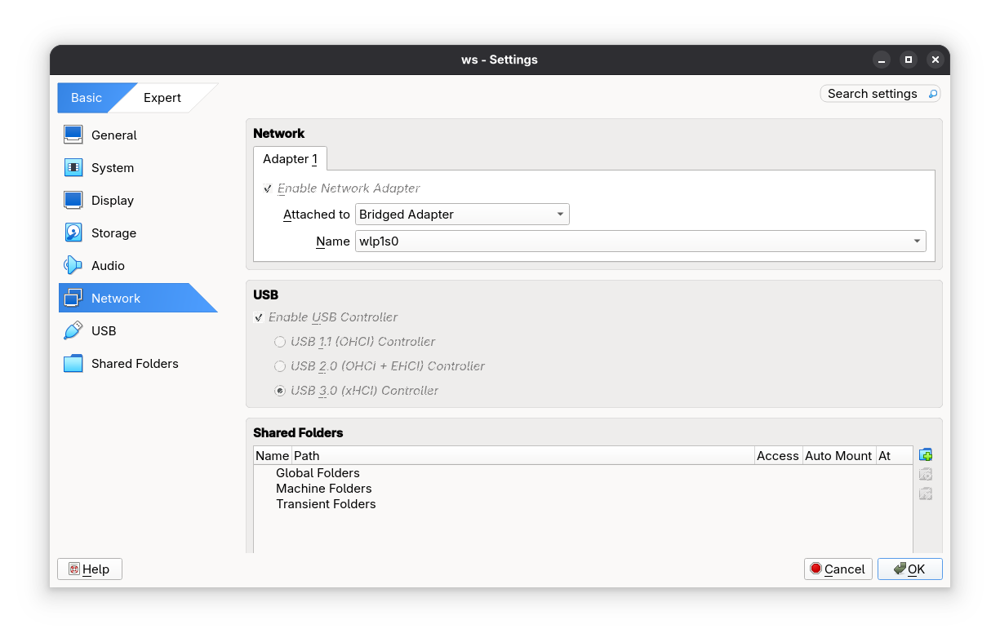
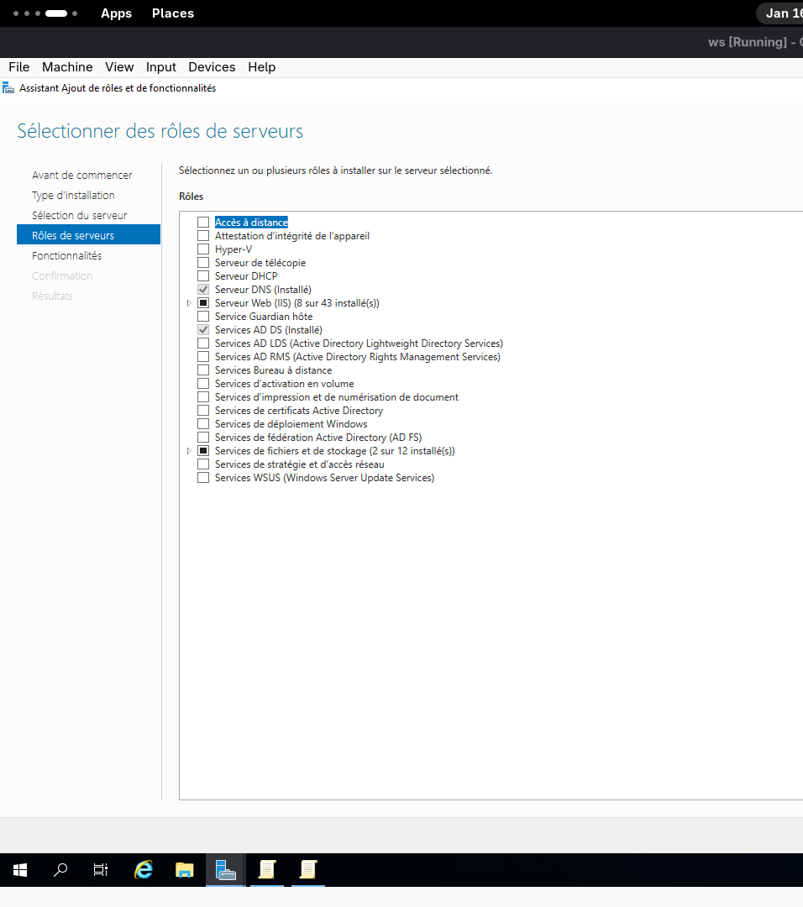
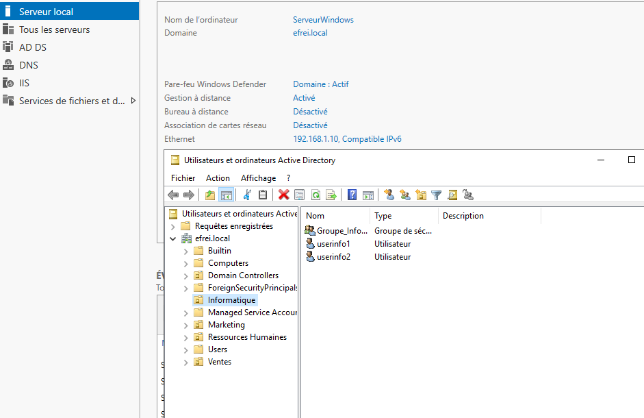
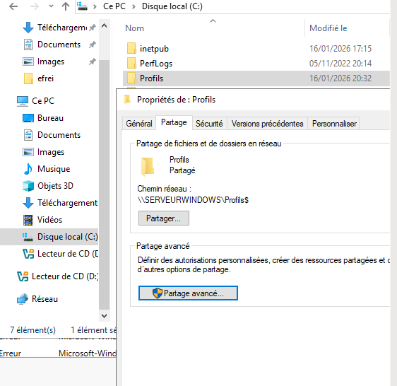
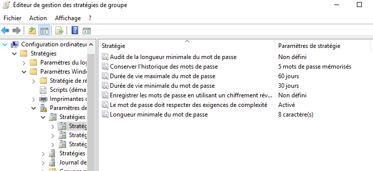
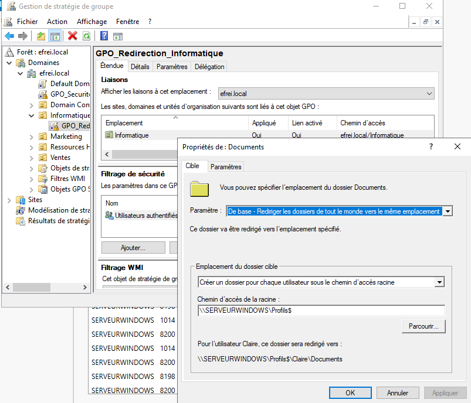
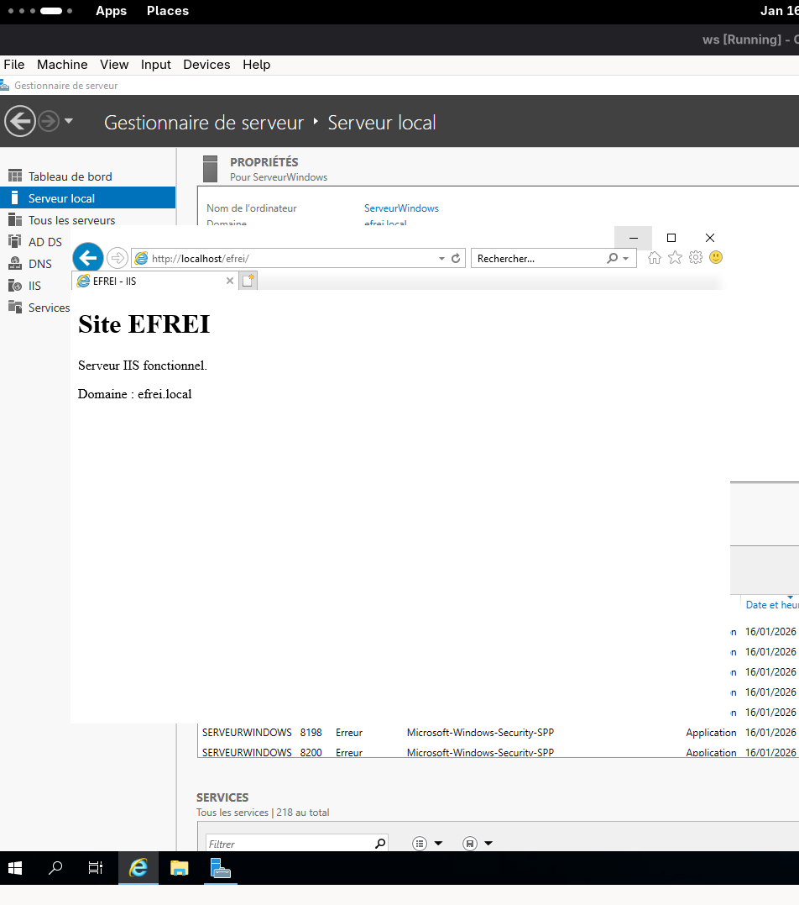
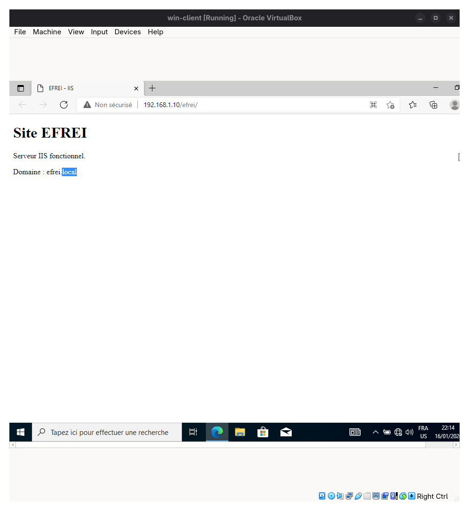
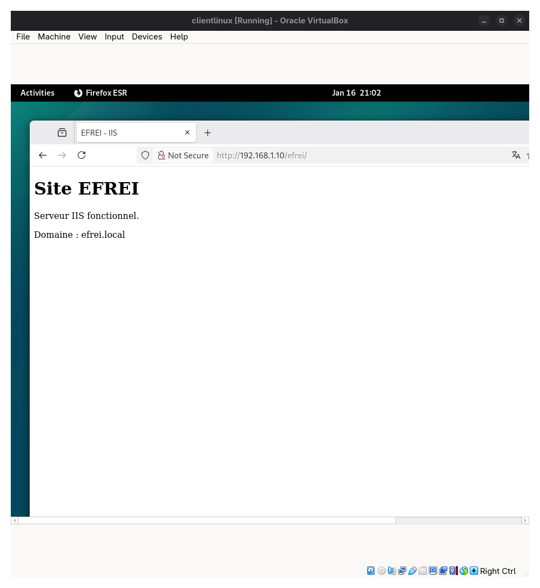

Infrastructure Windows Server, Active Directory et IIS
Présentation du projet
Ce TP avait pour objectif de mettre en place une infrastructure simple autour du domaine
efrei.local. Le travail comprenait l’installation d’Active Directory et DNS,
la création d’unités organisationnelles, d’utilisateurs, de groupes, la configuration de GPO,
la mise en place de profils itinérants, ainsi que l’installation d’un serveur web IIS.
Environnement technique
- Windows Server 2019
- Active Directory Domain Services
- DNS
- Windows 10 comme client du domaine
- Debian Linux comme client web
- IIS pour le service web
- VirtualBox avec réseau en bridge
Démarche réalisée
1. Configuration réseau
Les machines virtuelles ont été placées en réseau bridge afin de pouvoir communiquer sur le même réseau. Le serveur Windows a reçu une adresse IP fixe, puis les clients ont été configurés pour utiliser le DNS du serveur.
2. Installation d’Active Directory et DNS
J’ai installé les rôles AD DS et DNS sur Windows Server 2019, puis j’ai promu le serveur en contrôleur
de domaine pour le domaine efrei.local.
3. Création des OU, utilisateurs et groupes
L’annuaire Active Directory a été structuré avec plusieurs unités organisationnelles comme Informatique, Marketing et Ressources Humaines. Des utilisateurs et des groupes ont ensuite été créés dans les OU correspondantes.
4. Mise en place des profils itinérants
Un dossier partagé nommé Profils$ a été créé sur le serveur. Les utilisateurs ont ensuite été configurés
avec un chemin de profil itinérant afin de centraliser leurs données de profil sur le serveur.
5. Configuration des GPO
Plusieurs stratégies de groupe ont été mises en place, notamment une GPO de sécurité et une GPO de redirection
du dossier Documents. Après application de la commande gpupdate /force, les paramètres ont été testés
depuis le poste client Windows.
6. Installation du service IIS
Le rôle IIS a été installé sur le serveur afin de publier un site web simple. L’accès au site a ensuite été testé depuis le serveur, le client Windows et le client Linux.
Captures et preuves
Les captures ci-dessous montrent les différentes étapes de configuration de l’infrastructure : réseau, Active Directory, utilisateurs, GPO, profils itinérants, IIS et tests clients.









Compétences travaillées
- Installation et administration de Windows Server
- Configuration d’un contrôleur de domaine Active Directory
- Gestion des utilisateurs, groupes et unités organisationnelles
- Mise en place de stratégies de groupe
- Configuration de profils itinérants
- Installation et test d’un serveur web IIS
- Tests de connectivité depuis des clients Windows et Linux
Conclusion
Ce TP m’a permis de comprendre le fonctionnement d’une infrastructure Windows Server en domaine. J’ai pu mettre en place un contrôleur de domaine, organiser l’annuaire Active Directory, appliquer des stratégies de groupe et vérifier le fonctionnement depuis plusieurs postes clients.
Ce travail m’a aussi permis de relier l’administration système, la gestion des utilisateurs et la mise à disposition de services réseau dans un environnement proche d’un contexte professionnel.